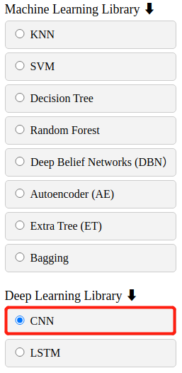

Function of Convolutional Neural Networks (CNN)
Fault diagnosis and remaining useful life (RUL) prediction based on
Convolutional Neural Networks (CNN)
Description
Result = CNN (Function, Opt Algorithm , hyper-parameter) returns a confusion matrix. In
"File Upload" is used to load the required data set. In "Function" a method is selected.
When the optimisation algorithm is not used, "Opt Algorithm" should be selected as "None"
and the required parameters should be set in the "Parameter".
Result = CNN (Function, Opt Algorithm , hyper-parameter) returns a confusion matrix. In
"Upload" is used to load the required data set. In "Function" a method is selected.
When the optimisation algorithm is used, the required algorithm is selected in "Opt
Algorithm" and parameters such as the number of iterations can also be set here.
Parameter introduction
Parameters of CNN:
• Dropout: Float between 0 and 1. Fraction of the input units to
drop. (data type: float)
• Learning Rate: The learning rate. (data type: int)
• BatchSize: The number of samples per gradient update. (data type:
int)
• Conv: The number of convolutions.. (data type: int)
Parameters of optimisation algorithms:
• Pop_size: Number of particles/chromosomes. (In particle swarm
optimization(PSO) and Genetic algorithm(GA)). (data type: float)
• Max_iter: Number of iterations. (data type: int)
• Alpha: Cooling factor.(In simulated annealing(SA)). (data type:
float)
Functional description of the main components
The overall view of function of CNN is divided into File Upload, Function, Opt Algorithm,
Parameter and Result.
File Upload
In the "File Upload" component, the user loads data and labels by clicking on the "Choose
File" buttons, and the file names of the data and labels are displayed in the boxes. Finally
click the button "Upload" to upload the file successfully. Upload data files support .mat,
.txt, .csv, .xls, .npy format files.
• Train data or test data: Each row of train label or test
lebelrepresents the
classification or RUL of the corresponding row of train data or test data. (data type:
float)
• Train label or test label: Each row corresponds to one observation
(also known as an
instance or example), and each column corresponds to one predictor variable (also known as a
feature). (data type: float)
Function
Fault diagnosis and RUL prediction are provided as methods.
Optimization algorithm
In this component, the user can select the optimization algorithm they wish to use. If the
user does not want to use the optimization algorithm to optimize the parameters, simply
select "None".
If the user needs to use the optimization algorithm, the default parameters of the
optimization algorithm can be changed.
Hyper-parameter
When "None" is selected in the "Opt Algorithm" component, it means that the optimization
algorithm is not used to find the optimal parameters. Therefore, the user has to set the
hyper-parameter values himself. Each hyper-parameter is provided with a default value, but
the user can also change the value of the hyper-parameter if required, if the user does not
change it, the software will run with the default value.
Result
After the software has been run, click the "Show Result" button to display the confusion
matrix.
If the funktion is "RUL Prediction" and an optimization algorithm is used, it will display
a drawn curve.
The "Download" button downloads relevant result images, data and reports.
Examples
The process of finding the optimal hyper-parameters of CNN using the PSO
algorithm in fault diagnosis.
Step 1: Configuration procedure
To select "Fault diagnosis and RUL prediction" from the process bar on the left side of the
web page.
Step 2: Select function
To select the procedure that needs to be configured from the process display area.
The CNN function is chosen for fault diagnosis and RUL prediction.

Step 3: Data file upload
Select the data file to be applied from the local path.
After successfully selecting the upload data file, click "Upload". Complete the uploading of
training data and test data.
Step 4: Set and save parameter
First choose whether to use the optimization algorithm to optimize the hyper-parameters of
the machine learning model.
To select a different optimization algorithm requires additional configuration of
optimization algorithm parameters. For details about the parameters of the optimization
algorithm, see "Parameter Introduction".
Then user need to choose the application method of the CNN model. Optional bearing fault
diagnosis or remaining life prediction.
Finally, click "Save" after all parameters are configured.
Step 5: Execute the configured procedure
Before executing the configured function, user also need to set the selected output image
and file format.
Finally select "Run".
Step 6: Show result
When the progress bar reaches the end, the task is completed.
The graphical results of the function can be easily viewed by selecting "Show Results".
The displayed result graph is the confusion matrix.
Step 7: Download
To download the compressed file of the trained model, the predicted labels and the detailed
results of the process the user can click "Download" button.


.PNG)
.PNG)
.PNG)
.PNG)
.PNG)
.PNG)
.PNG)
.PNG)
.PNG)
.png)
.png)
.png)
.png)
.png)
.png)
.png)
.png)
.png)